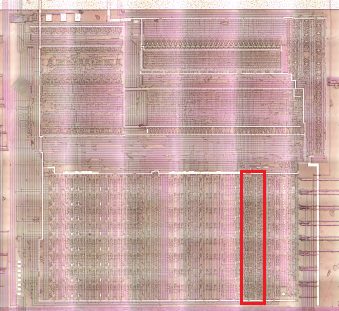
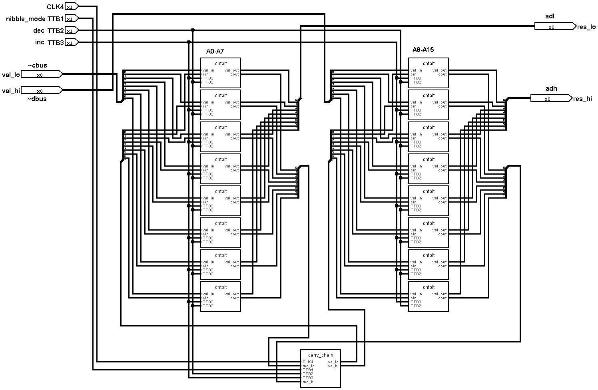
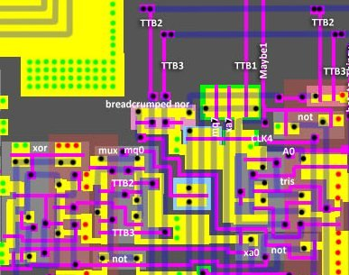
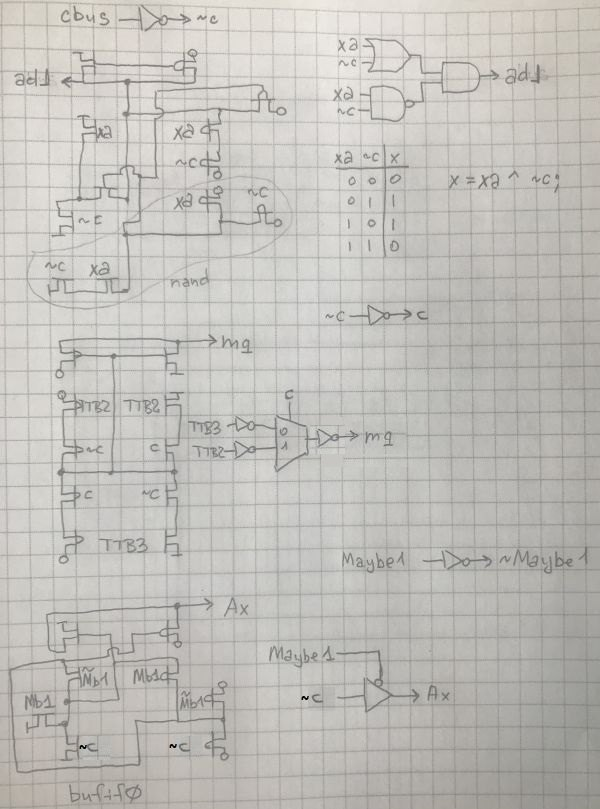
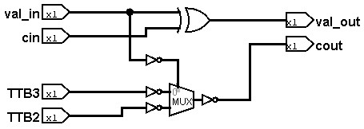
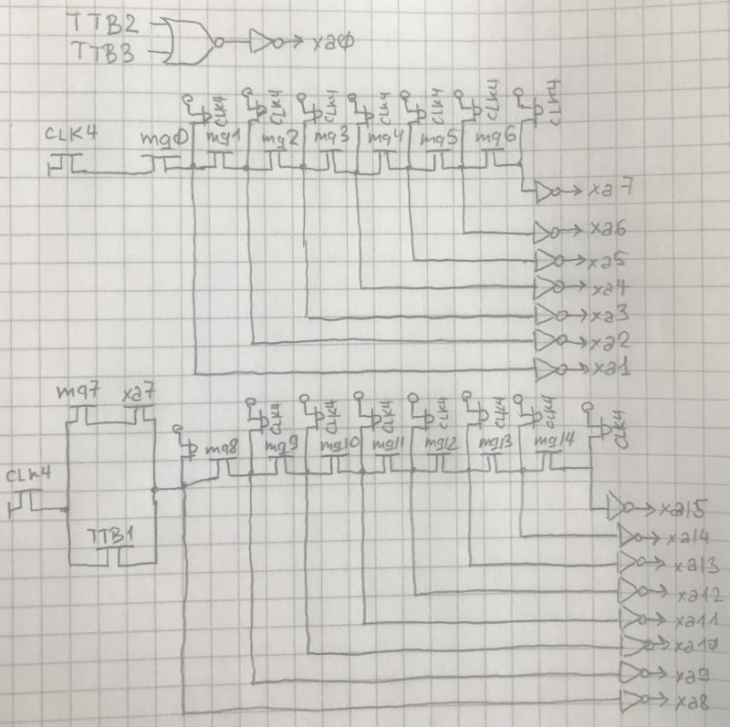
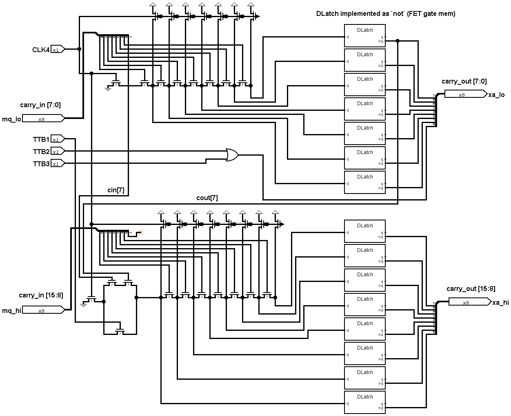
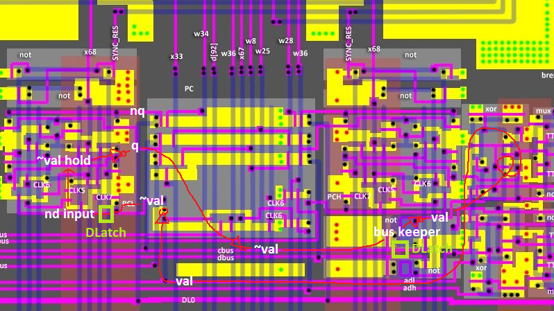

Increment/Decrement Unit (IDU)



Counter bits


The bit designs are repeated between the lower part (A0-A7) and the upper part (A8-A15), the only difference being that the lower part is connected to cbus/adl and the upper part to dbus/adh.
Counter carry chain


The carry chain is done as a "breadcrumped" layout.
IDU Path
To make the movements between registers and IDU clearer, here is a short description (the process is quite confusing with inverters).
- The value on the cbus/dbus contains a
~valof register (registerqoutput inversion). - This value is stored on the BusKeeper (transparent DLatch). From the BusKeeper inverted value of
~valasvalis fed to the IDU. - At the output of the IDU the value is fed to the adl/adh buses as
val. - There is an inverter on the register input that loads
~valinto the register. - The register input has the feature that it is in a floating state between CLK6 and CLK7 (the register input is a transparent DLatch)
- In the register the value is stored as
~val(inverse hold)
